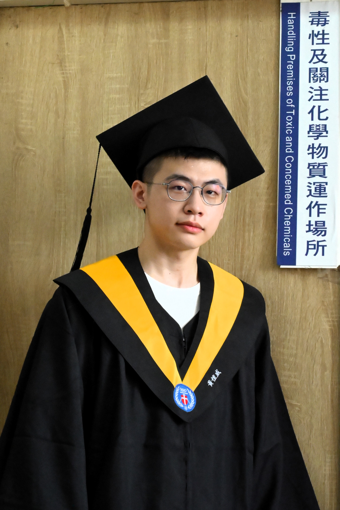

Kai-Wei Huang
Fortune favors the bold.
勇敢的人先享受世界
Welcome to my personal website.
歡迎來到我的個人網站。
About Me
關於我
I am a chemistry major at Chung Yuan Christian University, passionate about polymer synthesis, conductive hydrogels, and nanotechnology. I enjoy research and aim to contribute to cutting-edge materials science.
我是就讀中原大學化學系的學生，專注於高分子合成、導電水凝膠與奈米材料領域。我熱愛研究，希望在材料科學領域做出貢獻。
Projects
專題作品
Conductive Hydrogel Research
導電水凝膠研究
Development of stretchable conductive hydrogels based on PEDOT-co-Thiophene and functional PVA for potential wearable sensor applications.
開發基於 PEDOT-co-Thiophene 與功能性 PVA 的可延展導電水凝膠，應用於未來穿戴式感測器。